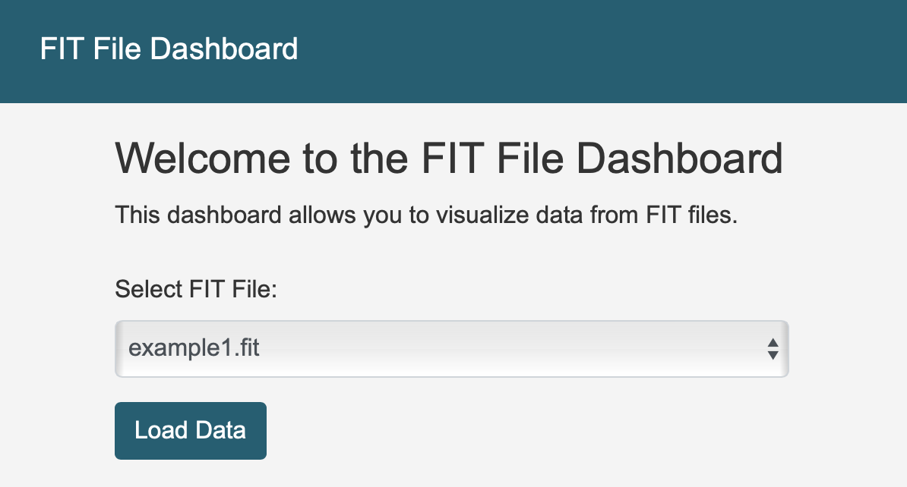

FIT File Dashboard
The FIT File Dashboard is a Flask-based web application designed to visualize and interact with fitness data stored in .FIT files. This project provides an intuitive interface for users to upload and analyze fitness data, displaying key metrics and trends through charts and summary tables.
